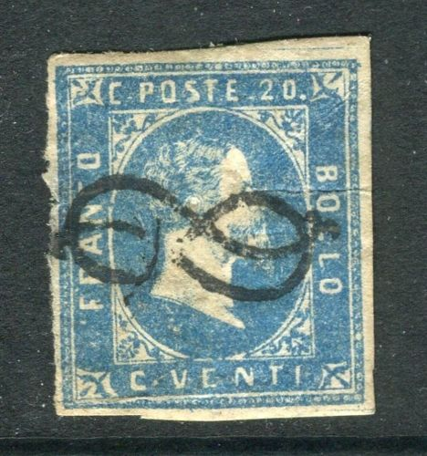
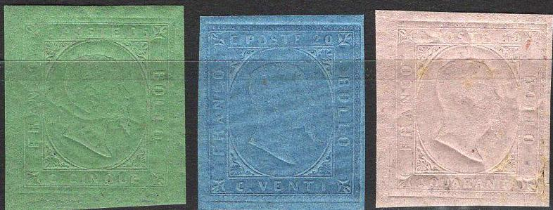
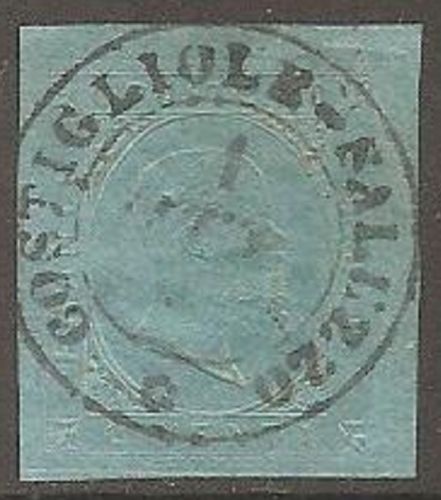
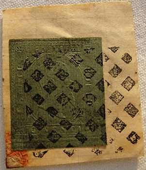

Sardegna - Sardinien - Sardaigne
Return To Catalogue - Sardinia forgeries of the 1851 issue - Sardinia 1854 issue - Sardinia 1855 issue - Sardinia miscellaneous - Italy
Note: on my website many of the
pictures can not be seen! They are of course present in the
catalogue;
contact me if you want to purchase the catalogue.
With thanks to Lorenzo, (check his excellent website on Italian States!) http://www.antichistati.com/800/index800.html who kindly set some of his images at my disposal.
5 c black 20 c blue 40 c red
Value of the stamps |
|||
vc = very common c = common * = not so common ** = uncommon |
*** = very uncommon R = rare RR = very rare RRR = extremely rare |
||
| Value | Unused | Used | Remarks |
| 5 c | RRR | RRR | |
| 20 c | RRR | RR | |
| 40 c | RRR | RRR | |



Cancel resembling an '8'; the 'Nodo di Savoia'

Proof of the 40 c value with green ornaments around the design,
inscription "Saggio" (=proof) at the bottom


5 c green 20 c blue 40 c red
Value of the stamps |
|||
vc = very common c = common * = not so common ** = uncommon |
*** = very uncommon R = rare RR = very rare RRR = extremely rare |
||
| Value | Unused | Used | Remarks |
| 5 c | RRR | RRR | |
| 20 c | RRR | RR | |
| 40 c | RRR | RRR | |
Some very clear copies:
Here with a "NIZZA MARITTA" cancel (= current day Nice
in France).
With "ALESSANDRIA" cancel
Unofficial reprints were made of these stamps in 1863 and in 1877. There also exist proofs (and forgeries?) in different colours (even with cancels). Examples:


(20 c violet and reprint? with cancel)


Unofficial Matraire reprint (Matraire was the original printer of
these stamps as well) and a Matraire proof(?).

I've been told that these are Usigli
reprints.


I've been told that this is a forgery as well. And another
forgery with "SUSA OTT 2 53" cancel. According to
http://www.ilpostalista.it/falsi/falsi020.htm the town of Susa
never used a single circle cancel....

This is a reprint with a forged cancel.
Here a page from the Fournier Album with several forgeries:
One of the above stamps has the cancel "SAVONA 3 OTT 54 3M" which is mentioned in the Serrane guide (among many others), but here it appears to be "SAVONA 3 OTT 54 9M", (Serrane says that the dates are interchangeable).
On http://www.ilpostalista.it/falsi/falsi020.htm it is stated that for single circle town cancels there should never be a dot in between the number and the "M" or "S" at the bottom, except for a much later cancel of Cagliari (of 1863?). Here some forged cancels with this dot:


Forged cancels: "BIELLA ? OTT 53 7.S". Also a forged
"ALLESSANDRIA 22 FEB. 53 O" cancel.

Most likely a forged Allesandria cancel.



For Sardinia 1855 issue, in the above
design, click here.

The following values exist: 5 c, 50 c, 1 L, 1 L 20, 2 L and 4 L
(all in the colour red).
{kind=link}
{kind=link}
{kind=link}